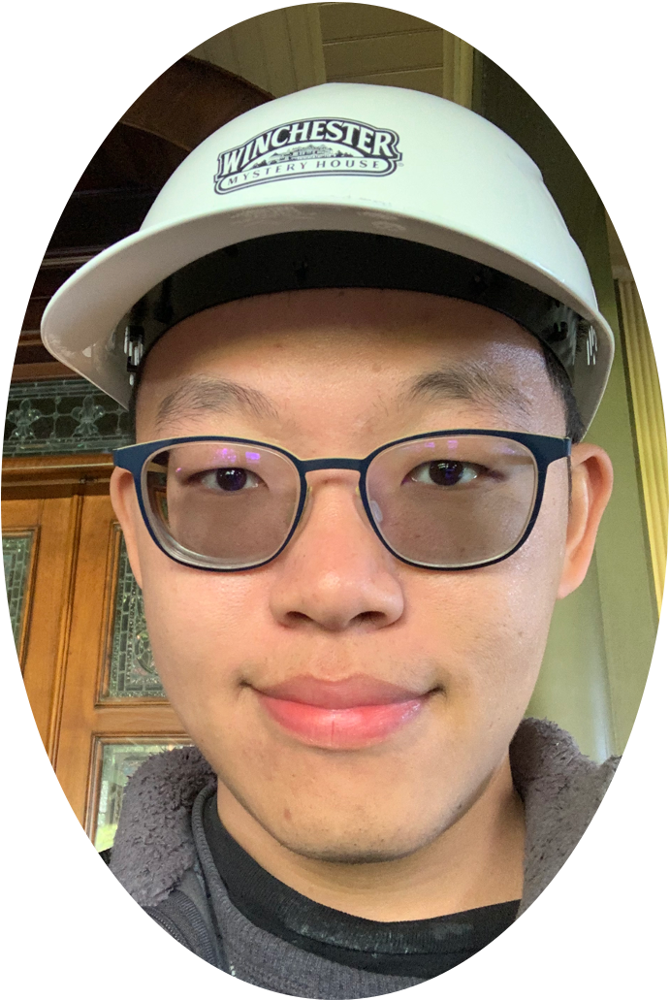

I like problems where the physics is non-negotiable — and tools are how I share the answer.
I started in electrical engineering at NTU with a minor in physics (rank 30/204), where an antenna design challenge — one of 6 semifinalist teams worldwide at the IEEE AP-S Student Design Challenge — first taught me to close the loop between algorithms and hardware.
Nine years in Prof. Chung-Chih Wu's group followed: deriving optical models from Maxwell's equations, turning them into a >300-file simulation suite the whole lab designed devices with, and fabricating OLEDs that pushed external quantum efficiency from the ~25% conventional limit to 80.8%. Along the way: 37 journal papers with over 4,000 citations, 13 patents, and a habit of productizing every method I touched.
Since 2022 I've been a Principal Engineer (AI/ML) at TSMC Pathfinding, building scientific AI for early-stage semiconductor R&D, with work spanning materials, process optimization, and literature-based knowledge discovery. Evenings and weekends, I build scientific software with agentic coding.
Languages: Mandarin (native) · English · Japanese (JLPT N2)
Physics-informed AI · scientific software · semiconductor R&D
linkedin.com/in/wei-kai-lee